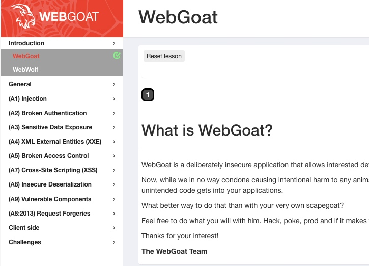
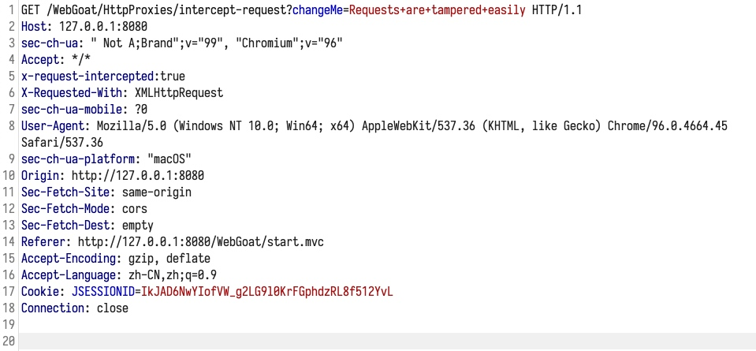
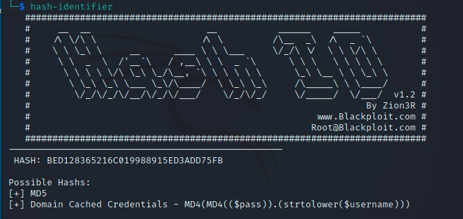
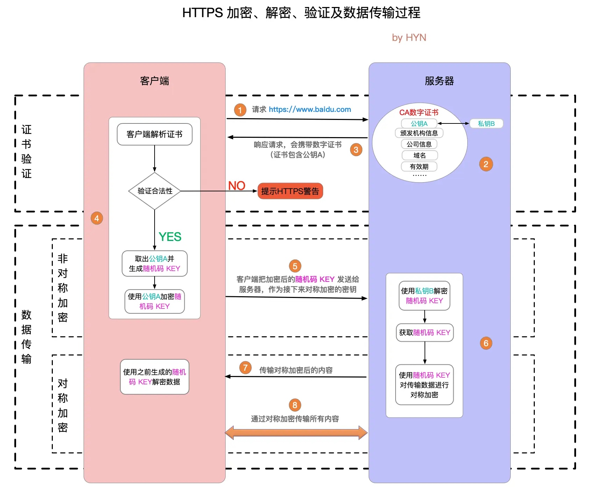
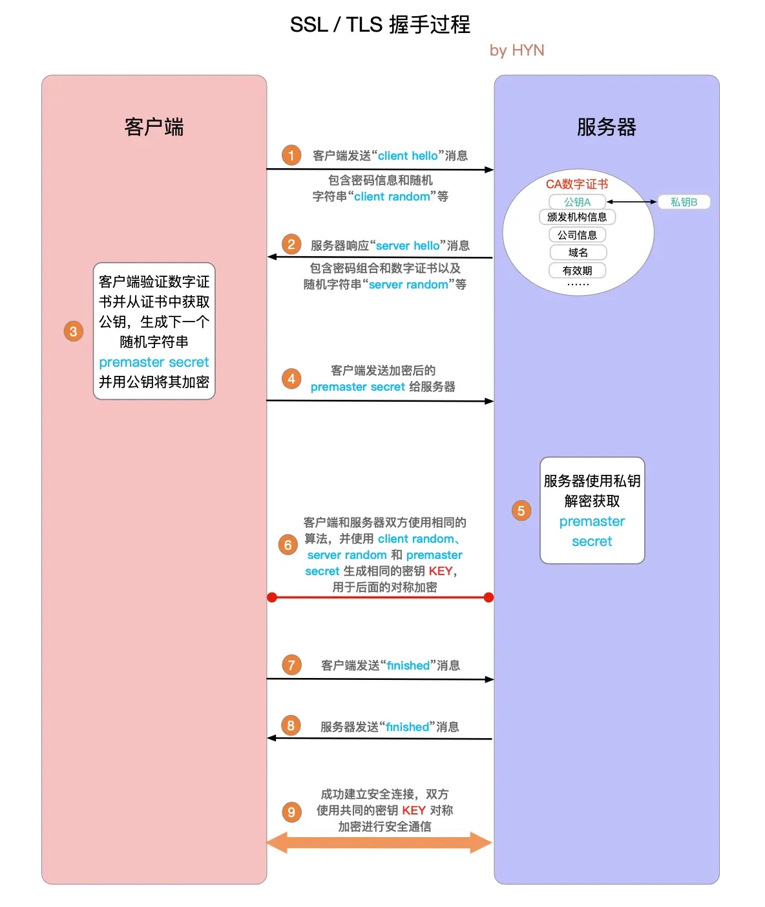

0x00 环境
先把环境跑起来
- WebGoat 的地址: https://github.com/WebGoat/WebGoat/
- 目前我使用的版本是 v8.2.2
- 按照官方教程, 直接 docker 启动
docker run -it -p 127.0.0.1:80:8888 -p 127.0.0.1:8080:8080 -p 127.0.0.1:9090:9090 -e TZ=Asia/Shanghai webgoat/goatandwolf:v8.2.2
http://127.0.0.1:8080/WebGoat 访问, 并注册账号, 进入页面

0x01 HTTP Basics
http://127.0.0.1:8080/WebGoat/start.mvc#lesson/HttpBasics.lesson
F12 开发者模式查看 HTTP 请求并输入答案
0x02 HTTP Proxies
http://127.0.0.1:8080/WebGoat/start.mvc#lesson/HttpProxies.lesson
- 章节中提到了名为
zed attack proxy 的工具, 不过我不打算用
- 据之前的了解, 渗透测试中更常用的应该是
BurpSuite
安装并使用 BurpSuite
社区版下载安装 https://portswigger.net/burp/communitydownload
或者 brew install --cask burp-suite
为了方便, 先使用 BurpSuite 的内置 Chrominium 浏览器
找到了一个 BurpSuite 的说明书: https://t0data.gitbooks.io/burpsuite/content/
Intercept and modify a request

0x03 Developer Tools
已知的知识, 跳过
0x04 CIA Triad
- 保密性 (Confidentiality)
- 完整性 (Integrity)
- 可用性 (Availability)
0x05 Crypto Basic
Encoding 编码
不属于密码学范畴
不是加密, 仅仅是编码方式的转换
- Base64
- URL encoding
- URL 中不允许空格等其他字符, 因此换个表示方式
- HTML encoding
- 为了保证某些字符是显示在 HTML 页面中, 而不是被当成 HTML 的一部分被解释执行
- UUEncode
- XOR encoding
- 单纯用 key 来做 xor, 可以猜测 key 的长度之后进行暴力破解
- IBM WebSphere Application Server 默认密码存储方式
软件设计上不要把 encode/decode 用在一些奇怪的地方, 给人一种加过密的错觉
还不如直接用明文, 至少人看到之后的第一印象是 不安全, 这样就会去尝试改进它
人的认知能力有限 可能才是安全问题最大的隐患
Lesson 2 题目
直接 Base64 Decode 就行了
Lesson 3 题目
直接用在线工具破解
或者观察破解工具原码, 发现是与固定 key '_' xor 后, Base64 encode 的结果, 把这个过程逆向一下就得到结果了
哈希/摘要 Hashing
用于校验信息是否被改变
但不应该用于保存密码
- 彩虹表
- 将密码与 hash 结果的对应关系保存在一个大的 hash map 中
- 构造碰撞
- payload 改变, 但 hash 结果不bmwq
- MD5, SHA-1
加盐
密码应该被加盐后 hash 存储
关于密码存储的 cheat sheet:
https://cheatsheetseries.owasp.org/cheatsheets/Password_Storage_Cheat_Sheet.html
Lesson 4 题目
先识别 hash 类型 https://www.kali.org/tools/hash-identifier/
再彩虹表破解 https://www.kali.org/tools/hashcat/

# md5
./hashcat -m 0 'BED128365216C019988915ED3ADD75FB' rockyou.txt
# sha256
hashcat -m 1400 '8D969EEF6ECAD3C29A3A629280E686CF0C3F5D5A86AFF3CA12020C923ADC6C92' rockyou.txt
加密 Encryption
在 HTTPS 中的应用 [1]:

握手详解 [2]:

签名 Signing
用来校验信息的合法性 (当信息的完整性 Integrity 很重要时)
Lesson 6 题目
根据 openssl 的 man 手册, 可以从从 RSA 私钥获取 modulus:
openssl rsa -in private.pem -modulus -noout
这样就获取了第一个问题的答案
第二个问题看不懂, a signature for us based on that modulus 不知道是什么意思
可能要先去学习一下 RSA 算法具体是怎么回事才能明白问题的含义
https://en.wikipedia.org/wiki/RSA_(cryptosystem)
RSA 算法
\[{\displaystyle (m^{e})^{d}\equiv m{\pmod {n}}}
\]
三个很大的正整数 e, d, n 可以满足上面的式子
通俗的说, m 的 e 次方的 d 次方除以 n 之后的余数, 与 m 直接除以 n 的余数, 相等
找到这么一组数字之后 m 就可以作为 payload
n 即是上面提到的 modulus
那么 e 和 n 在一起就可以作为公钥
d 和 n 在一起 可以作为私钥
加密的过程是, 给定 m, e, n, 获得 c:
\[{\displaystyle c\equiv m^{e}{\pmod {n}}}
\]
解密的过程是, 给定 c, d, n, 获得 m:
\[{\displaystyle c^{d}\equiv (m^{e})^{d}\equiv m{\pmod {n}}}
\]
回到 Lesson 6 题目
RSA 算法已经有了大概的了解, 但还是看不懂题目
于是搜了下 "openssl 签名", 没找到合适的内容, 不过大概知道了 openssl 这个工具可以来签名东西
然后直接去搜题目的答案看了下, 原来题目的意思是想要把 modulus 的内容用私钥签个名
这题目有点草人, 说明和提示都需要改进一下, 应该把每一步的输入和期望输出说清楚
- 必须把
Modulus= 给去掉
- 必须要把 modulus 内容中最后的换行符去掉 (
echo -n)
echo -n "xxxx modulus" | openssl dgst -sha256 -sign private.pem | base64
Keystores 密钥库
DNS CAA: https://en.wikipedia.org/wiki/DNS_Certification_Authority_Authorization
Security defaults
很多安全问题都是因为使用了默认的安全设置
- java cacerts 从来没更改过
- 个人 id_rsa 私钥未加密存储
- ssh 服务器允许 username/password 访问, 导致持续经受暴力破解
但话说回来, 从开发设计的角度来说, 为啥要把不安全的配置作为默认配置呢? 这难道不是一种设计失误?
如果可以默认提供安全的配置, 那就应该把安全的配置作为默认配置
如果没办法提供安全的配置 (比如有些信息只有使用者才知道), 那应该引导使用者去使用安全的配置, 在配置前可以让应用跑不起来
说白了很多时候开发者并没那么重视安全, 或者说, 比起来安全, 更在意的是应用是否会被更多人使用
Lesson 8 题目
# 先按照题目要求把 docker 跑起来
docker run -d webgoat/assignments:findthesecret
# 使用 root 账号进入 docker
docker exec -it -u root 3df20e2bdda8 bash
按照题目要求用 /root 目录下的 secret 解密信息
echo "U2FsdGVkX199jgh5oANElFdtCxIEvdEvciLi+v+5loE+VCuy6Ii0b+5byb5DXp32RPmT02Ek1pf55ctQN+DHbwCPiVRfFQamDmbHBUpD7as=" | openssl enc -aes-256-cbc -d -a -kfile /root/default_secret
题目的意思应该是想要表达不要在 docker image 里面放任何敏感信息吧?
0xFF 引用
[1] https://segmentfault.com/a/1190000021494676
[2] https://segmentfault.com/a/1190000021559557?_ea=29659396